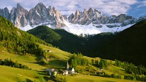

Kashmir: Heaven On Earth
Jammu & Kashmir, a piece of heaven on earth, is the 19th largest state in India and it is located mostly all in the Himalayan mountains. It is also the only state in India with a Muslim-majority population.

Attractions
- 1.Gulmarg According to CNN, Gulmarg is the "heartland of winter sports in India" and was rated as Asia's seventh best ski destination.The town is accessible from Srinagar by road via Tangmarg. An abandoned GOI hotel structure in Gulmarg The road climbs uphill in the last 12 kilometres to Gulmarg passing through forests of pine and fir. Winter sports like skiing, tobogganing, snowboarding and heli-skiing take place on the slopes of Mount Apharwat reachable by a Gondola lift.
- 2.Pahalgam Pahalgam is a town and a notified area committee in Anantnag district of the Indian union territory of Jammu and Kashmir. It is a popular tourist destination and hill station. Its lush green meadows and pristine waters attract thousands of tourists from all over the world each year.It is located 45 kilometres (28 mi) from Anantnag on the banks of Lidder River at an altitude of 7,200 feet (2,200 m). Pahalgam is the headquarters of one of the five tehsils of Anantnag district. Pahalgam is associated with the annual pilgrimage to the shrine Amarnath Yatra. Chandanwari, located 16 kilometres (9.9 mi) from Pahalgam. The town is the starting point of the yatra that takes place every year in the months of July–August, receiving hundreds of thousands of tourists. Because of its religious significance and role as a base camp, the town attracts 70% of visitors to the valley. This flood of tourists overwhelms some of the local infrastructure, especially waste management in the town
- 3.Sonmarg Sonmarg provides trekking routes leading to Vishansar Lake, Krishansar Lake, Gangabal Lake and Gadsar Lake in the Himalayas, which are stocked with snowtrout and brown trout. The Sind River meanders here and abounds with trout and mahseer. Ponies can be hired for the trip up to Thajiwas glacier, a major attraction during the summer months. The Yatra to the nearby Amarnath Temple begins in Sonmarg. Baltal, 15km east of Sonmarg, is a valley that lies at the foot of the Zoji La pass. Trekkers can also reach the city of Leh - known as "the rooftop of the world" - by crossing over the Zoji La. The Jammu and Kashmir tourism department organises river rafting tournaments at Sonmarg throughout the year, which has recently seen the participation of teams from abroad
- 4.Srinagar Srinagar is one of several places that have been called the "Venice of the East". Lakes around the city include Dal Lake – noted for its houseboats – and Nigeen Lake. Apart from Dal Lake and Nigeen Lake, Wular Lake and Manasbal Lake both lie to the north of Srinagar. Wular Lake is one of the largest fresh water lakes in Asia.Srinagar has some Mughal gardens, forming a part of those laid by the Mughal emperors across the Indian subcontinent. Those of Srinagar and its close vicinity include Chashma Shahi (the royal fountains); Pari Mahal (the palace of the fairies); Nishat Bagh (the garden of spring); Shalimar Bagh; the Naseem Bagh. Jawaharlal Nehru Memorial Botanical Garden is a botanical garden in the city, set up in 1969.The Indian government has included these gardens under "Mughal Gardens of Jammu and Kashmir" in the tentative list for sites to be included in world Heritage sites.
- 5.Verinag Verinag or Vitastatra is a tourist place and a notified area committee with tehsil status (Shahabad Bala Verinag) in Anantnag district in the union territory of Jammu and Kashmir, India. It is about 26 kilometers away from Anantnag and approximately 78 kilometres south-east from Srinagar which is the summer capital of the union territory of Jammu and Kashmir. Verinag is also the first tourist spot of Kashmir Valley when travelling by road from Jammu, the winter capital of the union territory of Jammu and Kashmir towards Srinagar, the summer capital of the union territory of Jammu and Kashmir. It lies at the entry point of Kashmir Valley right after crossing Jawahar Tunnel and is also known as Gateway of Kashmir. A major tourist attraction of this place is Verinag Spring, for which this place is named. There is an octagonal stone basin at Verinag Spring and an arcade surrounding it which were built by Mughal emperor Jahangir in 1620 A.D. Later, a beautiful garden next to this spring, was laid out by his son Shah Jahan. This spring is known to never dry up or overflow. Verinag Spring is also the major source of river Jhelum. Verinag Spring and Mughal Arcade surrounding it is officially recognized by Archaeological Survey of India as a Monument of National Importance